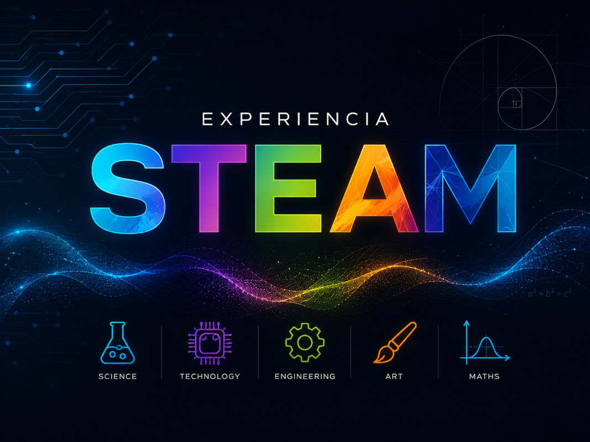

Experiencia STEAM
Curso escolar 2021 - actualidad
Docente
EP y ESO
STEAM
Programa diario en La Estación CyT: cada centro educativo acude una mañana a la semana y, a través del storytelling, participa en dos actividades manipulativas y experimentales, una científica y otra tecnológica.
Duración: Noviembre - Mayo
Contexto: La Estación CyT
Destinatarios: Alumnado EP y ESO